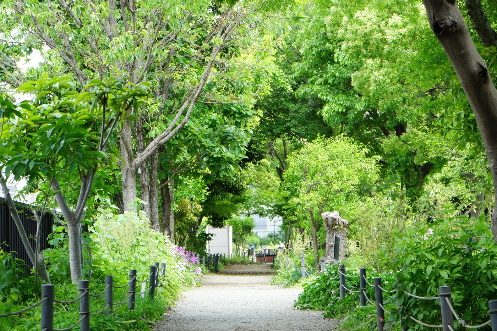

兵庫県伊丹市・れんが壁の住まい。1985年の竣工から重ねた歴史を礎に、2026年6月、住民主体の自主管理へ。
管理会社任せにしない。無駄を省き、安心を守る。住民の手で、資産と暮らしを育てます。
2026年6月、分離発注による自主管理へ移行。各専門業者と直接契約し、住民の手で資産を守ります。
お金の流れを見える化。無駄なコストを省き、修繕積立金を将来へ着実に積み上げます。
公式LINEや掲示で、住民どうしの距離が近い暮らし。緊急時の連絡体制も整えています。
専門家・各業者と直接つながり、安心とコスト最適化を両立します。
管理会社へまとめて委託する従来方式から、清掃・設備点検・植栽などを各専門業者へ分離発注する自主管理へ。 仲介マージンを省いて費用を最適化しつつ、緊急対応や会計は顧問の専門家と連携して安心を確保します。
※ 体制は役職単位で掲載しています。個人名・連絡先は公開していません。
兵庫県伊丹市・エスト北塚口
竣工から、自主管理元年まで。
※ 1985〜2025年の主要トピック（大規模修繕等）は順次追記してまいります。
※ 公開ページには集計値のみを掲載します。戸別の金額や個人情報は載せません。
管理費・修繕積立金の総額・構成比・推移グラフを準備中です。
（理事会承認後に掲載します）
自主管理への移行により管理委託費を見直し、削減できた分を建物の維持・修繕へ回します。
収支は組合員の皆さまへ定期的にご報告し、修繕積立金を将来の大規模修繕へ着実に積み上げます。
詳細な会計資料（収支報告・予算）は、組合員限定ページでご覧いただけます。
高額な設備をあえて持たない造り。だから、点検・維持費がシンプルで分かりやすい。
4階建て・エレベーターのない設計。昇降機の保守点検や、将来の更新（数百万円規模）といった負担がそもそもありません。
近年「維持・更新コストが重い」と問題になりがちな機械式駐車場を持ちません。その分の積立負担が不要です。
大型の共用設備に頼らないぶん、設備更新コストを抑制。修繕積立金を、本当に必要な建物本体の維持へ集中できます。
余分を持たないシンプルな造りが、毎月の点検・維持費の軽さにつながります。車をお持ちの方は周辺の月極駐車場、免許さえあれば車を持たずに徒歩2〜3分のカーシェアという選択肢も。それぞれの暮らし方に合わせて選べます。 ムダを省いて、住まいの価値を守ることに集中する ―― それが、エスト北塚口の選択です。
兵庫県伊丹市。学校・買い物・移動手段がそろう、暮らしやすい住宅地です。
小学校まで徒歩2〜3分、中学校も徒歩10分圏内。お子さまのいるご家庭にも安心の距離です。
エントランスのすぐ前（万代第2駐車場前）にスーパー「万代」。徒歩約1分で日々の買い物が完結します。
最寄り駅まで徒歩25〜30分。一方、バス停は徒歩約1分で、JR福知山線「猪名寺」駅／阪急神戸線「塚口」駅行きのバスがそれぞれ約15分。神戸・大阪どちらにもアクセスしやすい環境です。
周辺に月極駐車場あり。徒歩2〜3分にはタイムズカーシェアの複数ステーションも。車を持つ／持たない、それぞれの暮らし方に対応できる環境です。
平日・週末を問わず家族連れや子どもたちでにぎわう、徒歩圏の憩いの場。四季折々の表情をどうぞ。

本マンションの管理に関する主要事項を整理しています。戸別データを含む重要事項調査報告書は、ページ下部の窓口より個別にご請求ください。
※2026年5月末までは日本ハウズイング株式会社（国土交通大臣（1）第034770号）へ一部委託。2026年6月1日より自主管理に移行。
※1985年（昭和60年）竣工のため、当時の関連書類は一部保存されておりません。
※戸別の管理費・修繕積立金額、売主住戸の滞納有無、最新の収支詳細は個別請求にてご案内します。
ご不明な点・追加で必要な書類等がございましたら、管理組合までお問い合わせください。
公開ページに掲載していない事項（戸別データ・規約の別表・議事録 等）は、個別請求にて対応いたします。
マンションや組合運営に関するお問い合わせ窓口です。
ご購入・ご入居をご検討の方、近隣の皆さまからのお問い合わせは、管理組合宛にて承ります。
お問い合わせ窓口：準備中